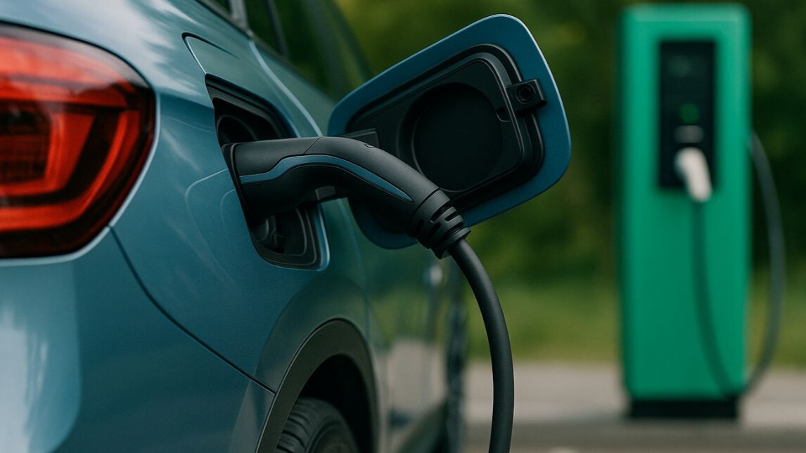
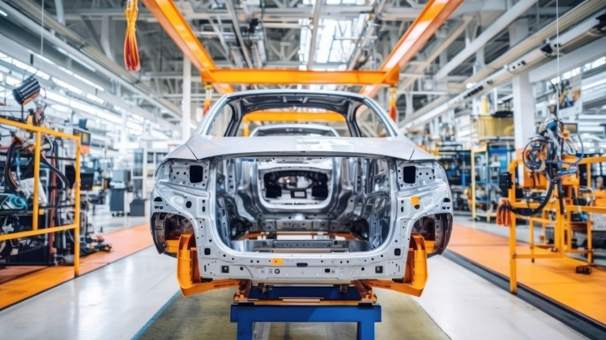

Ranking
La marca Volkswagen en México celebra el Día Mundial del Vocho con el Vocho Fest 2025
Puebla, Puebla. Como cada año, el 22 de junio se celebra alrededor del mundo al emblemático auto clásico Volkswagen Sedán, conocido en México como Vocho.
Puebla, Puebla. Como cada año, el 22 de junio se celebra alrededor del mundo al emblemático auto clásico Volkswagen Sedán, conocido en México como Vocho.

México se posicionó como el principal proveedor de vehículos hacia Canadá, superando a Estados Unidos, su tradicional socio comercial. Esta transformación en la dinámica automotriz norteamericana refuerza el papel de México como potencia manufacturera en la región.
La empresa aseguró una serie de contratos estratégicos con fabricantes de equipo original (OEMs) en Asia, Europa y América, que consolidan su papel como socio clave en la transición hacia la movilidad eléctrica.

El avance hacia una economía circular está transformando la industria automotriz a nivel global, y el reciclaje de automóviles ha dejado de ser un nicho para convertirse en un pilar estratégico.

En julio de 2025, la venta de vehículos híbridos, híbridos conectables y eléctricos en México alcanzó las 10,612 unidades, representando el 8.5% de las ventas totales de vehículos ligeros en el mes. Aunque la cifra fue ligeramente menor al mismo mes de 2024, el mercado mantiene una tendencia positiva en el acumulado anual.